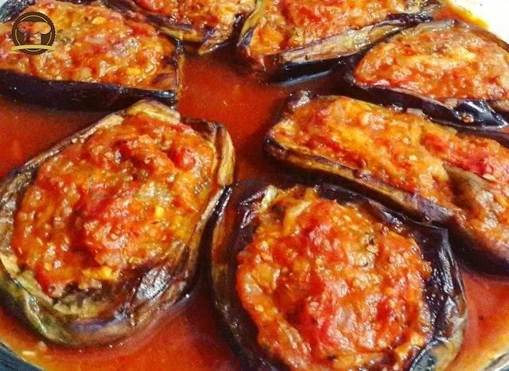

Imam Bayildi

Description
Imam Bayildi is a traditional Turkish dish made from eggplant stuffed with vegetables and topped with olive oil. The stuffing is mostly made from tomatoes, garlic, parsley, onions and herbs.
Ingredients
- 2 pcs large aubergine
- 1 pcs onion peeled roughly chopped
- 2 pcs tomatoes peeled deseeded and chopped
- 4 pcs Garlic cloves chopped
- 1 teaspoon fresh parsley chopped
- 1 teaspoon fresh mint chopped
- 1 teaspoon sugar
- 350 ml Olive oil
- 2 tablespoons lemon juice
- A pinch ground cinnamon
- A pinch Black pepper
- 1 tablespoon Salt
Steps
- Peel the aubergines with a vegetable peeler so you get a zebra look like on the image. Halve them lengthwise into two parts. You can use four smaller instead of two large aubergines, but in that case, you prepare them whole. I prefer halved ones because they give me a better visual appearance.
- Sprinkle the aubergines with salt and allow 15 minutes for the salt to draw moisture from them. Be sure to wipe them off with a paper towel. Otherwise, they will be soggy.
- In a frying pan, heat the olive oil and fry the aubergines on both sides. Fry for 4-5 minutes until they start to get brown colour. When done, remove them from the oil and set aside.
- In the second frying pan, we will now prepare the stuffing. Heat a little olive oil and sauté onion, garlic and tomato. Season with salt and pepper and finally add the spices - sugar, cinnamon, parsley and mint.
- Make a notch through the centre of the aubergine and fill it with stuffing.
- Lay the stuffed aubergines in a baking tray. If there is stuffing leftover, put it in the baking tray next to them. Pour over some more olive oil and lemon juice.
- Cover and place in the oven to bake for approx. 40-45 min at 160 degrees.
- Remove from oven and allow to cool and then cover with the liquid left from baking.
- Imam Bayildi is usually served cold and is additionally garnished with chopped fresh parsley. Yoghurt also goes excellent with this dish.